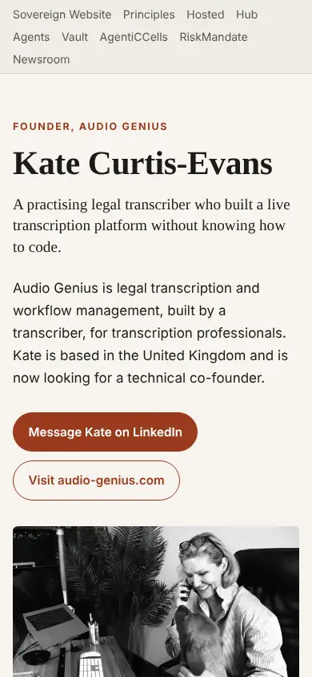
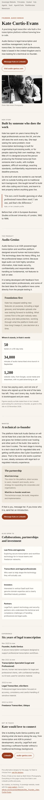
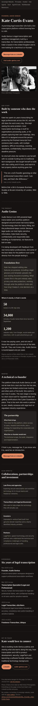
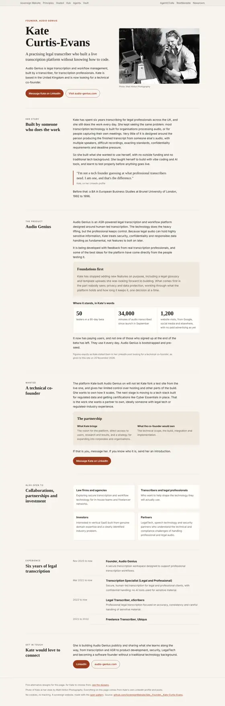
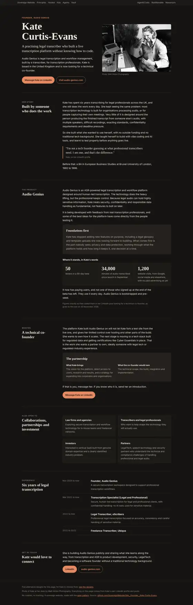

Synthetic users: Kate Curtis-Evans, round 2
Site: https://kate-curtis-evans.founder.sovereignweb.site/ (home, the first draft's single design). Commit: 3ec583f. Run: 20 November 2026, about 14:58 UTC, by design.b. Look score: 4.0 (4, 4, 4, 4, 4). The review.
Each persona is a separate agent given only what a visitor gets: the first phone screen (390 x 844), full-page screenshots at 390 and 1366 px in light and dark, the design chooser opened (from round 7 on), and the page's visible text. It is not given the guidelines or design.b's findings. Method: Synthetic users. These are simulations: they inform a rating, and never replace the measured checks or a real person.
Verdicts
Phone visitor in a hurry: 4 of 5
Knew it was Kate's page, aimed at a possible technical co-founder, and found "Message Kate on LinkedIn" at once. Trusted the plain figures and their dated source. Puzzled by the top menu (Hub, Vault, AgentiCCells, RiskMandate), which "has nothing to do with Kate"; the five-designs footer line looked like a draft; overlapping dates confused.
Small business owner: 4 of 5
Clear about what it is, but "as a florist, I can't tell how I'd buy a site like this". Trusted the real photo and honest tone. The top menu is jargon; grey text on beige boxes is faint; the phone page is long. Wanted a colour photo and a simpler menu.
Low-vision reader: 4 of 5
Found the main button easily. Grey text in the boxes and small footnotes look faint; the top navigation clutters the first screen; the experience dates overlap. Wanted a larger first heading and darker small text.
Design critic: 4 of 5
"Lovely serif and rust palette, calm spacing, a warm personal photo." The mobile nav wraps into a cluttered three-line block; box text is pale. "Strip the platform nav so it feels like hers alone."
Technical co-founder candidate: 4 of 5
Would message her and want a call about the stack and equity. Trusted the concrete figures and the named limits of her current platform; doubted self-reported figures. The nav is unexplained; the Ubiqus entry has no description.
Agreed by three or more
- The family bar at the top reads as someone else's menu (five of five). 2. The footer link to the designs reads as a draft. 3. Overlapping dates confuse. 4. Text in boxes looks faint.
What the personas saw




